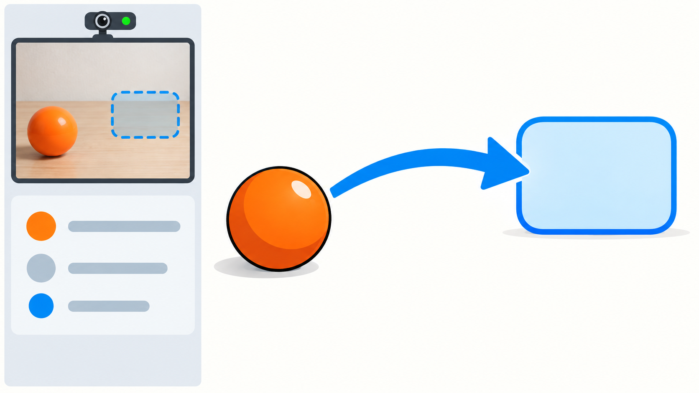
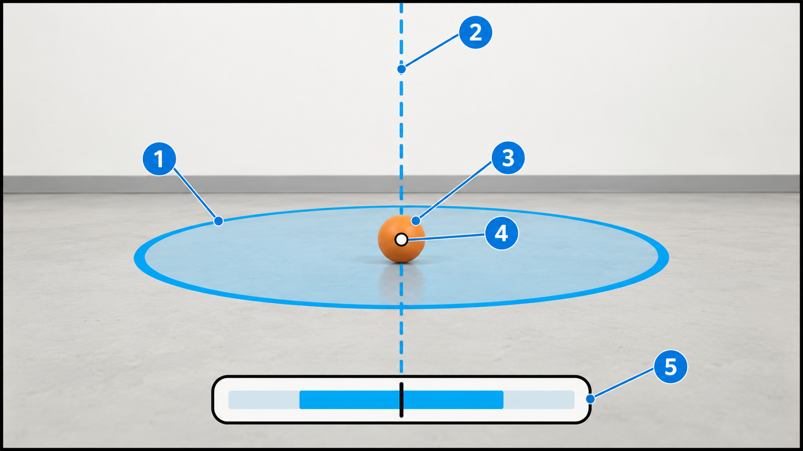
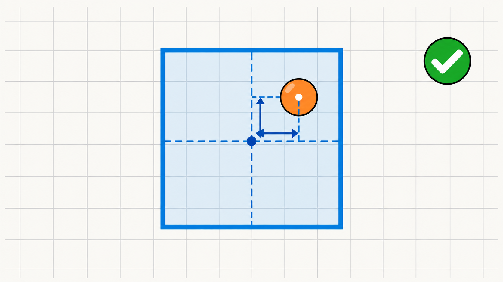
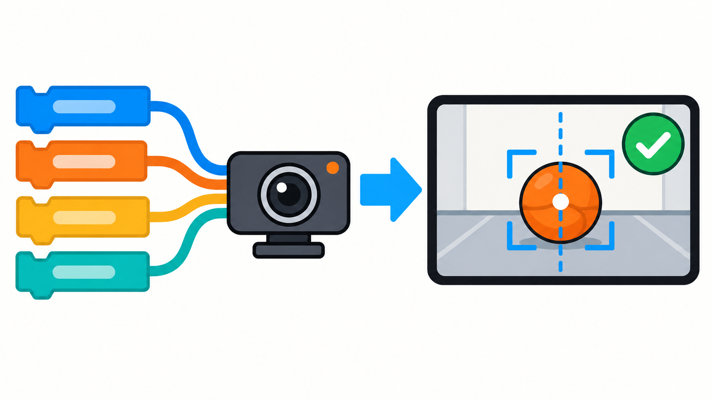
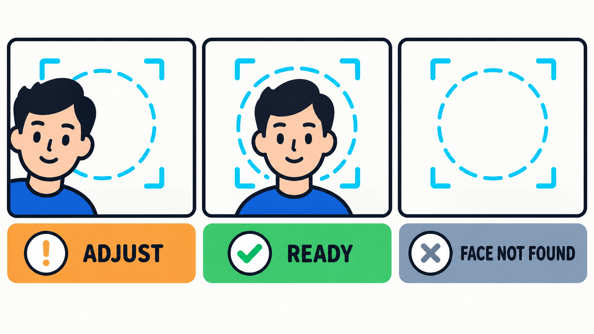
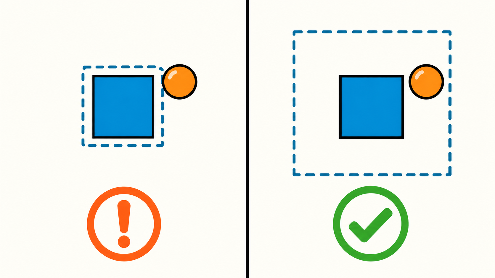
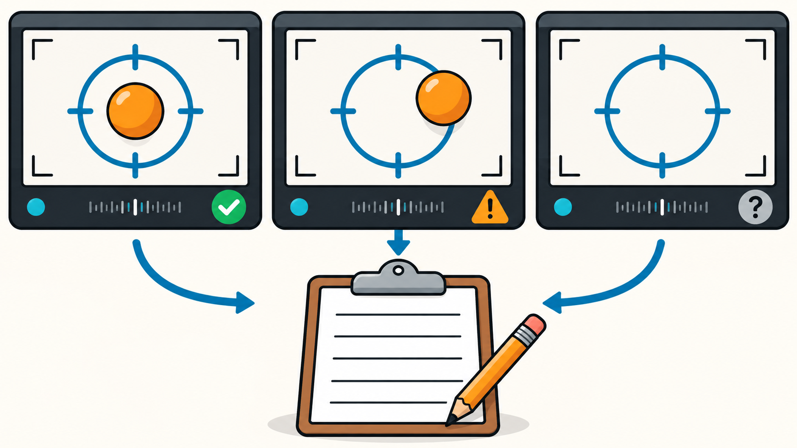

SHOW THE
NEXT MOVE.
The object finder already gives us a position. The new job is to draw a clear instruction on the live camera frame.
Object position → visual guidance → user action
The object finder already gives us a position. The new job is to draw a clear instruction on the live camera frame.

A good overlay adds only the information needed to act. Each drawn layer has one job.

The centroid is a pair of pixel coordinates. Compare it with the target centre and make the decision visible.

In the notebook, draw the guide, mark the measured centre, and write the status directly onto each webcam frame.

Do not make someone interpret a dot or a number. The status should tell them what to do next.

Change one value, then check whether the interface approves a position too early or makes alignment unnecessarily difficult.
READY_TOLERANCE. Test the same off-centre object before and after your edit.
Keep evidence about whether the visible feedback matched what actually happened in the camera frame.
